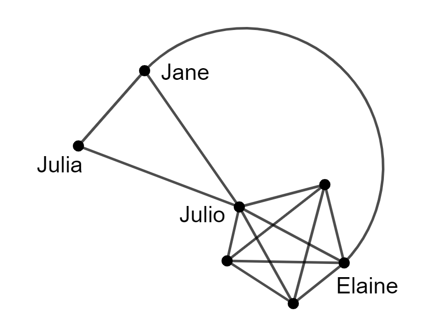
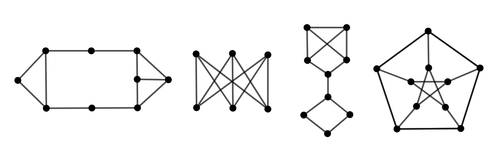
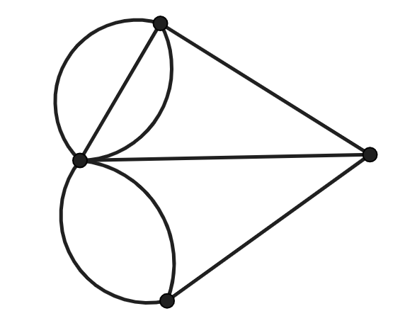
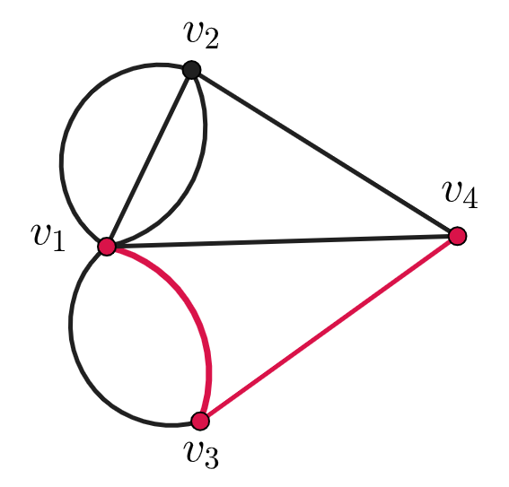
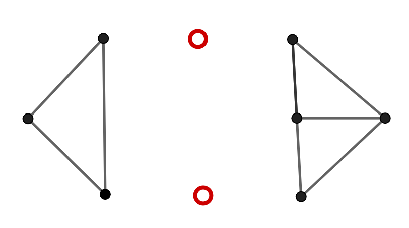
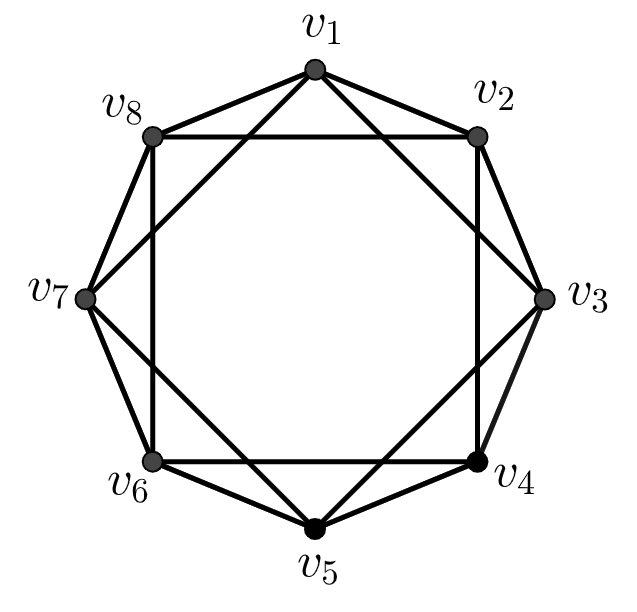

Jane and her friend Julia were invited to a small get together at their friend Julio’s place. When they arrive, they don’t really know any of the other four people (other than Julio) who seem to know each other EXCEPT one of the four coincidentally is Jane’s cousin, Elaine.

Figure1.7.2.Julio’s party
This type situations happen all of the time. If you’re sitting in a classroom, you’re in a similar situation right now. When you are with a group of people, you are a part of a mathematical structure known as a graph. Actually, any network (relationships, pipe systems, road maps, the internet, ...) can be represented as a graph.

Figure1.7.3.Various graphs
We see graphs anytime we have a collection of items (We call them vertices or nodes.) and relationships between those items (We call the relationships edges.). In fact, it is by the vertices and edges that we define a graph.
Definition1.7.4.
A graph G is a pair of two sets \(V\) and \(E\text{,}\) where \(V\) is the set of vertices and \(E\) is the set of edges on \(G\text{.}\)
Question1.7.5.
Draw the graph with vertex set \(V = \{a,b,c,d,e,f,g,h\}\) and edge set \(E = \{ab, ac, ad, cd, de, eg, eh, fb, fc, hc\}\text{.}\)
Graph theorists study all sort aspects of graphs. We ask questions about the longest path of a graph, how easy is it to break up a graph with vertex or edge deletions, and if we can draw a graph in the plane without crossing any edges (among many others).
We’ll explore a few interesting graph theory questions here.
Subsection1.7.1Touring the City of Königsburg
Figure1.7.6.
If we happen to find ourselves in Königsburg Prussia in the 18th century, we would see a city layout similar to the one in [image] [STRUCT].[NUM]. The Pregel river flowed through the middle of the city forming two islands. The part we care about, though, is the seven highlighted bridges.
Residents such as ourselves, as a game, would often attempt to tour the city with these rules:
You must cross each bridge (all 7) exactly one time (no more and no less).
You must end your tour exactly where you began.
A tour that meets these requirements will be called a successful tour.
Activity1.7.1.
Can you find a successful tour of Königsburg?
This game peaked the interest of the incredibly brilliant mathematician, Leonhard Euler (1707-1783), and to solve this question Euler introduced the field of graph theory to the world. The Königsburg bridge problem is considered the to be the first instance graph theory historically. Like Euler, we can picture Königsburg as a graph by treating the bridges as edges and use vertices to represent each land mass.
Question1.7.7.
Represent Königsburg with a graph.
Solution.

Figure1.7.8.
What do we mean by a "tour" on a graph? First, two edges are incident if they share a vertex. We can say a tour is a sequence of incident edges. We want to find a tour that begins and ends with the same vertex. This type of tour is called an eulerian circuit.
Let’s take a tour on our new Königsburg graph, and each time we visit and each time we leave a vertex, we will give that vertex a point. For example, if we start at vertex \(v_1\) and travel to \(v_3\) and then to \(v_4\text{,}\) then \(v_1\) and \(v_4\) have 1 point each while \(v_3\) has 2 points.

Figure1.7.9.
As we keep touring through our graph, the points of a vertex tells us how many edges touching that vertex are a part of our tour.
Question1.7.10.One-point vertices.
How can the vertex \(v\) have 1 point?
Solution.
Either \(v\) is the beginning or ending of our tour (and not both).
Question1.7.11.Odd Points.
How can the vertex \(v\) have an odd number of points?
Solution.
Our tour is currently resting at \(v\text{,}\) and \(v\) is not the first and last vertex of the tour. If the point value is more than 1, then the tour has already arrived and left \(v\) at least once.
Question1.7.12.Even Points.
How can the vertex \(v\) have an even number of points?
Solution.
Our tour is resting at \(v\text{.}\) If the point value is more than 1, then the tour has already arrived and left \(v\) at least once.
From questions Question 1.7.10, Question 1.7.11, and Question 1.7.12, we see that a vertex will only have an odd number of points (or adjacent to an odd number of edges in our tour) if that vertex either starts or ends the tour... unless the tour ends where it started.
Remember that an eulerian circuit passes through EVERY edge and ends where it started. So can a vertex in an eulerian circuit have an odd number of points? No. So if a graph has an eulerian circuit, then every vertex is adjacent to an even number of vertices. We just drew up a sketch of a proof for the following theorem.
Theorem1.7.13.
A graph \(G\) has an eulerian circuit if and only if it has no vertex adjacent to an odd number of edges.
We finally see what Euler saw.
Question1.7.14.
So why does the Königsberg graph not have an eulerian circuit?
Solution.
The Königsberg graph has several vertices adjacent to an odd number of edges.
Subsection1.7.2Connectivity
Let’s look again at the graphs in [image] [STRUCT].[NUM]. This time we want to break down our graphs by deleting vertices. In particular, we want to know how many vertices we have to delete in order to break the graph into pieces.
Figure1.7.15.
For example, if we delete one vertex from the first graph in [image] [STRUCT].[NUM] (the edges adjacent to that vertex are also deleted), does our graph break into two separate pieces? No. It’ll take more than one vertex, but it can be done with two vertices! In [image] [STRUCT].[NUM], we deleted two vertices (indicated by the red open circles), and now the graph is broken up. We say it is disconnected.

Figure1.7.16.
There’s a lot we could say about this situation. The two vertices we deleted are a cut set of the graph, and the pieces are called components. After we delete our cut set, if \(u\) is in one component and \(v\) is another component, then our cut set is a \(u-v\) separating set. In this graph, our cut set had two vertices, so we say the graph is \(2\)-connected.
Definition1.7.17.
In general, the graph \(G\) is \(k\)-connected if \(G\) has a cut set of \(k\) vertices.
For each graph \(G\) in [image] [STRUCT].[NUM], what is the smallest value of \(k\) such that \(G\) is \(k\)-connected?
Solution.
The graph on the farthest left is \(2\)-connected.
Knowing how connected a graph is can tell us other things as well. For example,
Theorem1.7.19.
If \(G\) is a \(k\)-connected graph, \(k \geq 2\text{,}\) then every \(k\) vertices of \(G\) lie on a common cycle of \(G\text{.}\)
Connectivity and cycles do not seem to be immediately related, but graph theorists have discovered that they are related concepts.
Subsection1.7.3Different Paths
Let’s play one more walking game. This time we’ll look at paths in a graph. A path is like a tour except now vertices can be revisted. So a path is a tour with unique vertices and edges.

Figure1.7.20.
Activity1.7.2.
From [image] [STRUCT].[NUM], can you find a path starting at \(v_1\) and ending at \(v_5\text{?}\) Can you find more than one?
Try this: after finding a \(v_1\)-\(v_5\) path, delete the vertices of the path from the graph (but not \(v_1\) and \(v_5\)). Then try to find another \(v_1\)-\(v_5\) path and deleting those vertices as well. Repeat this process as much as possible. How many \(v_1-v_5\) paths can you find in this way?
The paths you found in Activity 1.7.2 are called internally disjoint paths since they have no vertices in common other than their endpoints. Did you find four internally disjoint paths in the graph in [image] [STRUCT].[NUM]? Good. For a graph \(G\) with nonadjacent vertices \(x\) and \(y\text{,}\) is there a way we could count the number of \(x\)-\(y\) internally disjoint paths in \(G\text{?}\)
In Activity 1.7.2, when we found our first \(v_1\)-\(v_5\) path, we deleted the internal vertices.
Question1.7.21.
After deleting those internal vertices, was the graph still connected?
Solution.
No. If the graph was disconnected, then there would no more paths to find.
Question1.7.22.
How many paths do we need to delete in order to separate \(v_1\) and \(v_5\text{?}\)
Solution.
All four of them! Coincidence?
Does this give us some sort of link between \(x\)-\(y\) separating sets and the number of internally disjoint \(x\)-\(y\) paths?
Question1.7.23.
What is the size of the smallest \(v_1\)-\(v_5\) separating set in the graph in [image] [STRUCT].[NUM]?
Solution.
We need to delete four vertices. Note that \(\{v_2, v_3, v_7, v_8\} \) is a \(v_1\)-\(v_5\) separating set.
Woah. So we had four internally disjoint paths and a separating set cardinality four. This is not a coincidence. Let’s take graph \(G\) with nonadjacent vertices \(x\) and \(y\text{,}\) and let’s call the number of internally \(x\)-\(y\) paths \(p(x,y)\text{.}\) Let’s also let \(c(x,y)\) be the cardinality of a smallest \(x\)-\(y\) separating set. Now we can show they are related.
Theorem1.7.24.Menger’s Theorem.
Let \(G\) be a graph with nonadjacent vertices \(x\) and \(y\text{.}\) Then \(p(x,y) = c(x,y)\text{.}\)